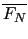
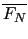
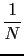
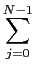
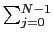

suivant: Où interviennent ces sommes
monter: Transformée de Fourier discrète
précédent: Transformée de Fourier discrète
Table des matières
Index
La transformée de Fourier discréte FN est une transformation bijective.
On a :
FN-1 =  

c'est à dire :
(FN-1(x))k = xj
Notation
Avec Xcas on a les fonctions fft et ifft qui sont :
fft(x)=FN(x) et
ifft(x)=
FN-1(x)
Définiton
Soient deux suites x et y périodiques de période N.
On définit :
- le produit de Hadamard, noté . , par :
(x . y)k = xkyk
- le produit de convolution, noté *, par :
(x*y)k = xjyk-j
On a alors :
N*FN(x . y) = FN(x)*FN(y)
FN(x*y) = FN(x) . FN(y)
Documentation de giac écrite par Renée De Graeve